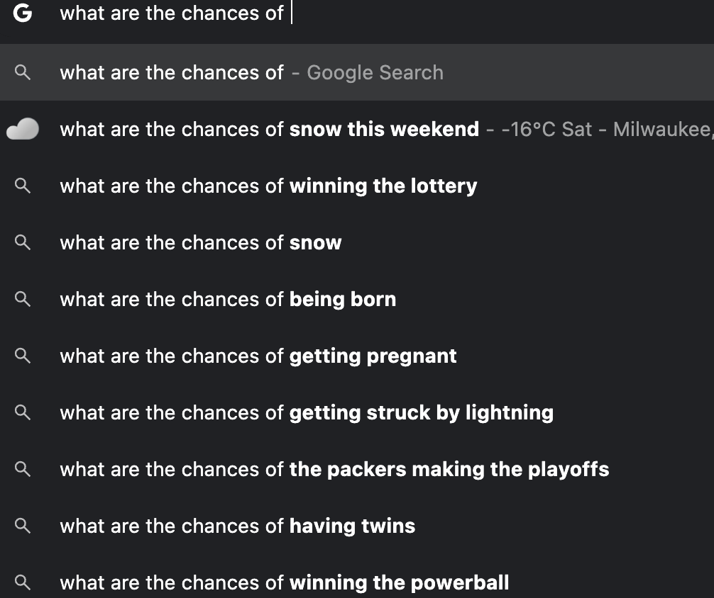
Probability Fundamentals 🎲
MATH 4720/MSSC 5720 Introduction to Statistics
Language of Uncertainty
- If we want to describe or quantify the uncertainty about something happening or not happening, we use probability.
- Starting this week, we are gonna learn basic probability, including its definition and operations. OK.
Probability Fundamentals
Interpretation
Operations
Conditional Probability
Independence
Bayes Formula
Why Study Probability
- We live in a world full of chances and uncertainty!
Jan 23, 2026
Sep 13, 2025
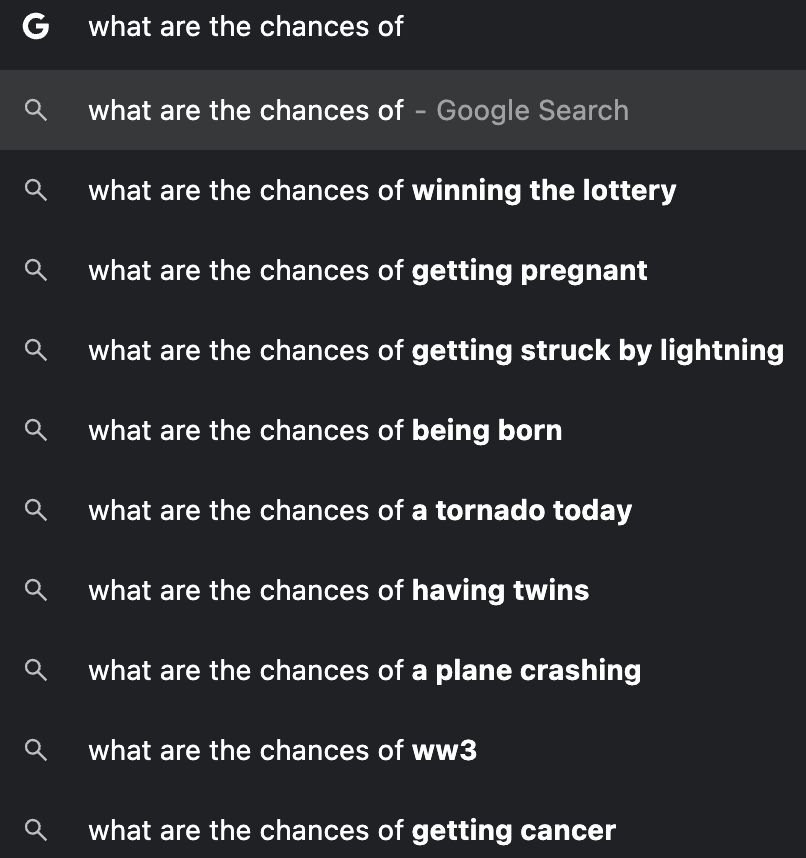
- We always ask questions like what are the chances of XXX
- I just typed what are the chances in Google, and these are the auto-completions.
- It looks like US people are curious about getting pregnant, getting COVID of course, and getting struck by lightning or tornado.
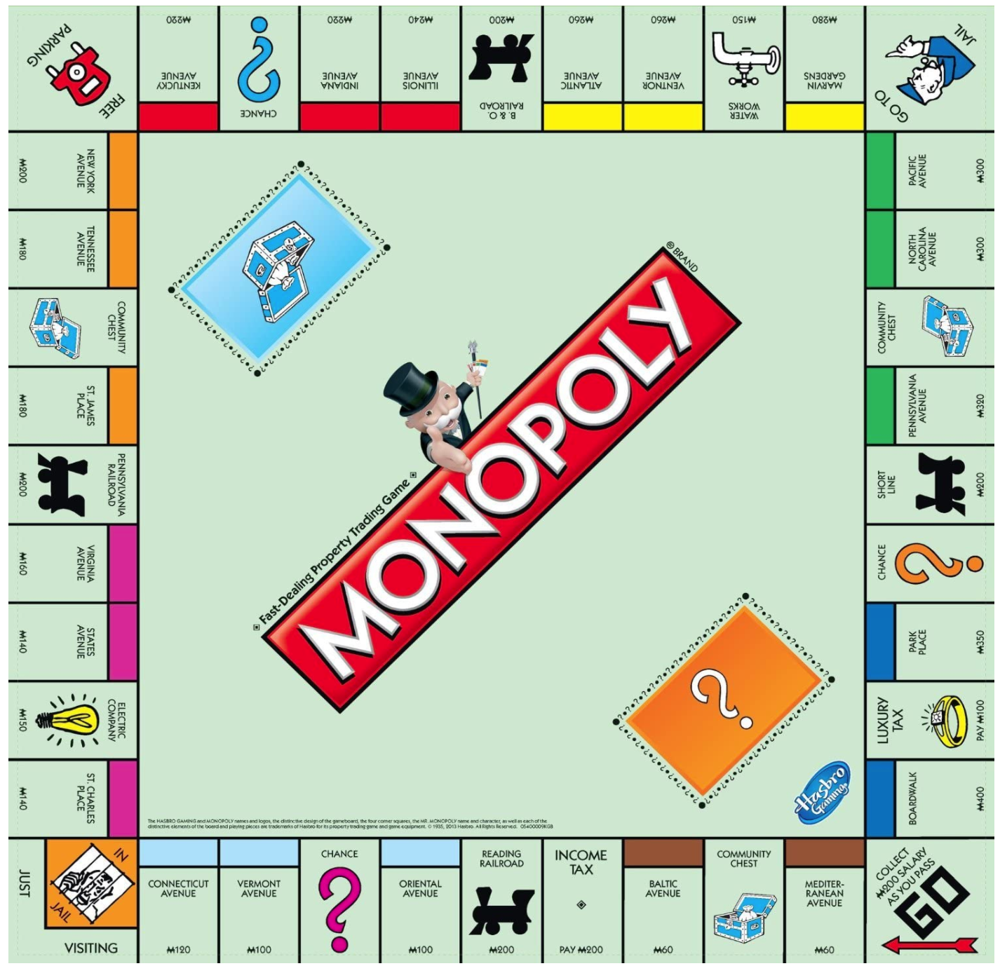

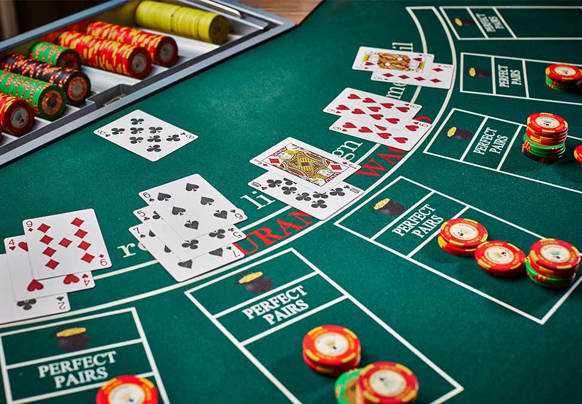
- And of course, it is the chance or uncertainty that makes so many games so fun, amusing and even additive.
Why Probability Before Statistics?
Probability : We know the process generating the data and are interested in properties of observations.
Statistics : We observed the data (sample) and are interested in determining what is the process generating the data (population).
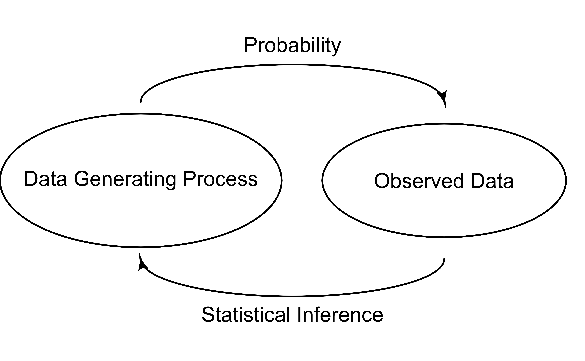
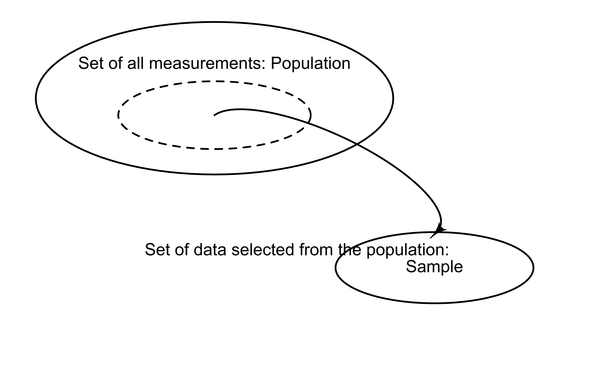
Statistics is based on probability, and while probability is not required for the applied techniques in this book, it may help you gain a deeper understanding of the methods and set a better foundation for future courses.
Interpretation of Probability
Interpretation of Probability: Relative Frequency
- Relative Frequency : The probability that some outcome of a process will be obtained is interpreted as the relative frequency with which that outcome would be obtained if the process were repeated a large number of times independently under similar conditions.
Frequency Relative Frequency
Heads 3 0.3
Tails 7 0.7
Total 10 1.0
---------------------
Frequency Relative Frequency
Heads 511 0.511
Tails 489 0.489
Total 1000 1.000
---------------------If we repeat tossing the coin 10 times, the probability of obtaining heads is 30%.
If 1000 times, the probability is 51.1%.
- Suppose we toss a coin.
- If we repeat tossing the coin 10 times, the probability of obtaining heads is 30%.
- If 1000 times, the probability is 51.1%.
. . .
Any issue of relative frequency probability?
Issues of Relative Frequency
- 😕 How large of a number is large enough?
. . .
- 😕 Meaning of “under similar conditions”
- airflow, temperature, same person, same coin?
. . .
- 😕 The relative frequency is reliable under identical conditions?
skilled person
. . .
- 👉 We only obtain an approximation instead of exact value.
. . .
- 😂 How do you compute the probability that Chicago Cubs wins the World Series next year?

- Most importantly, some process or experiment cannot be replicated or repeated.
Interpretation of Probability: Classical Approach
Classical probability : The probability is based on the concept of equally likely outcomes.
If the outcome of some process must be one of \(n\) different outcomes, the probability of each outcome is \(1/n\).
. . .
- Example:
- toss a fair coin (2 outcomes) 🪙
- roll a well-balanced die (6 outcomes) 🎲
- draw one from a deck of cards (52 outcomes) 🃏
. . .
Any issue of classical probability?
. . .
- The probability that [you name it] wins the World Series next year is 1/30?!
- No systematic method is given for assigning probabilities to outcomes that are not assumed to be equally likely.
- This interpretation or definition of probability is way too naive right!
- Only get pregnant or not get pregnant, but We cannot say the chance of getting pregnant is 1/2.
- Only get COVID or not get COVID, but We cannot say the chance of getting COVID is 1/2.
Interpretation of Probability: Subjective Approach
Subjective probability : The probability is assigned or estimated using people’s knowledge, beliefs and information about the data generating process.
A person’s subjective probability of an outcome, rather than the true probability of that outcome.
. . .
- I think “the probability that Milwaukee Brewers wins the World Series this year is 30%”.
. . .
- My probability that Milwaukee Brewers wins the World Series next year is different from an ESPN MLB analyst’s probability.
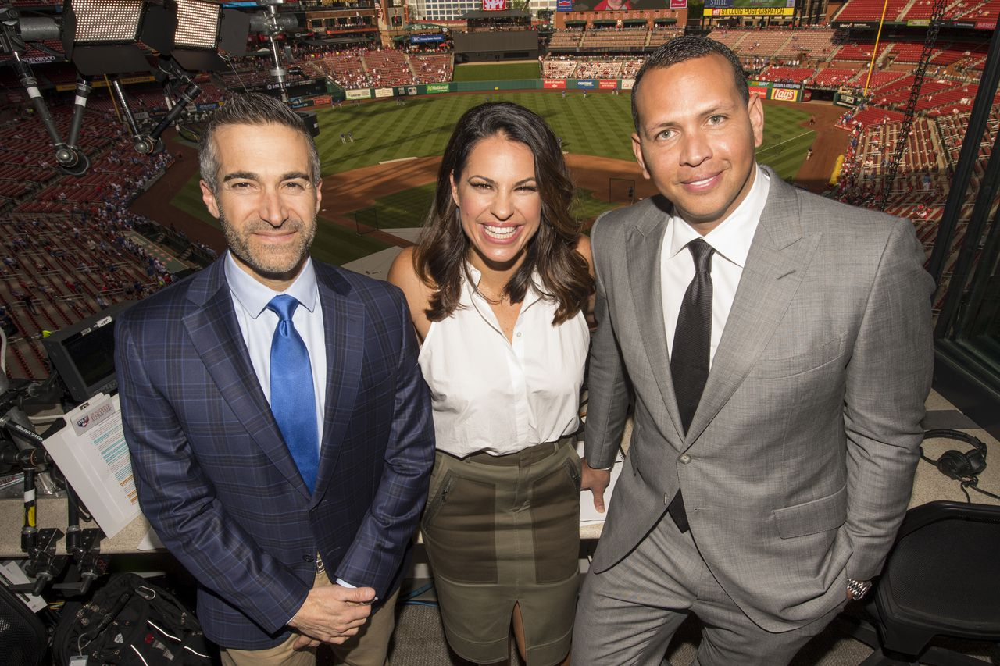

- Subjective probability: The probability is assigned or estimated using people’s knowledge, beliefs and information about the data generating process, or hoe the outcome is obtained from some experiment.
- I think “the probability that Milwaukee Brewers wins the World Series this year is 30%”.
- Since the probability is subjective, my probability that Milwaukee Brewers wins the World Series next year is different from an ESPN MLB analyst’s probability.
Any probability operations and rules do NOT depend on interpretation of probability!
no worries about which interpretation we gonna use before we do probability calculations. OK.
Probability Operations and Rules
Experiments, Events and Sample Space
Experiment: any process in which the possible outcomes can be identified ahead of time.
Event: a set of possible outcomes of the experiment.
Sample space \((\mathcal{S})\) of an experiment: the collection of ALL possible outcomes of the experiment.
| Experiment | Possible Outcomes | Some Events | Sample Space |
|---|---|---|---|
| Flip a coin 🪙 | Heads, Tails | {Heads}, {Heads, Tails}, … | {Heads, Tails} |
| Roll a die 🎲 | 1, 2, 3, 4, 5, 6 | {1, 3, 5}, {2, 4, 6}, {2}, {3, 4, 5, 6}, … | {1, 2, 3, 4, 5, 6} |
- Flipping a coin is an experiment because we can identify possible outcomes before we do the experiment, which are heads and tails.
- Rolling a die is an experiment because we can identify possible outcomes before we do the experiment, which are numbers 1, 2, 3, 4, 5, 6.
- We use curly braces to indicate a set. Any elements in the set are inside the curly braces.
. . .
Is the sample space also an event?
. . .
- Yes, the sample space itself is an event because it is also a set of possible outcomes of the experiment.
Set Concept: Example of Rolling a six-side balanced die
Draw a Venn Diagram every time you get stuck!
-
Complement of an event (set) \(A\), \(A^c\) : a set of all outcomes (elements) of \(\mathcal{S}\) in which \(A\) does not occur.
- Let \(A\) be an event that a number greater than 2. Then \(A = \{3, 4, 5, 6\}\) and \(A^c = \{1, 2\}\).
- Before formally introduce probability operations, we need some basic set concepts because probability is defined on a set, or event.
- Venn diagram is a very useful tool for identifying a set, so I encourage you to draw a venn diagram when you get stuck on complicated set operations.
- This applet is very helpful. Try to check each set and see if you fully understand concept of union, intersection, complement and containment or subset.
- An Event is usually described by words, and we need to convert the words into the set it is referring to.
. . .
-
Union \((A \cup B)\) : a set of all outcomes of \(\mathcal{S}\) in \(A\) or \(B\).
- Let \(B\) be an event that an even number is obtained. (What is \(B\) in terms of a set?)
- \(B = \{2, 4, 6\}\), \(A \cup B = \{2, 3, 4, 5, 6\}\).
- Collect all elements in A and in B.
- Keep unique ones.
- An element in \((A \cup B)\) either belongs to event A only, B only or belong to A and B.
. . .
-
Intersection \((A \cap B)\) : a set of all outcomes of \(\mathcal{S}\) in both \(A\) and \(B\).
- \(A \cap B = \{4, 6\}\).
- the elements in the set \((A \cap B)\) should occur in both A and B.
Set Concept: Example of Rolling a six-side balanced die
-
\(A\) and \(B\) are disjoint (or mutually exclusive) if they have no outcomes in common \((A \cap B = \emptyset)\).
- \(\emptyset\) means an empty set, \(\{\}\), i.e., no elements in the set.
- Let \(C\) be an event that an odd number is obtained. Then \(C = \{1, 3, 5\}\) and \(B \cap C = \emptyset\).
- All elements in A are also elements in B. But there may be some B’s elements that are not in A.
- Set D has more elements than B, and B’s elements also belong to D.
. . .
-
Containment \((A \subset B)\): every elements of \(A\) also belongs to \(B\). If \(A\) occurs then so does \(B\).
- \(B\) is an event that an even number is obtained.
- \(D\) is an event that a number greater than 1 is obtained.
- \(B = \{2, 4, 6\}\) and \(D = \{2, 3, 4, 5, 6\}\).
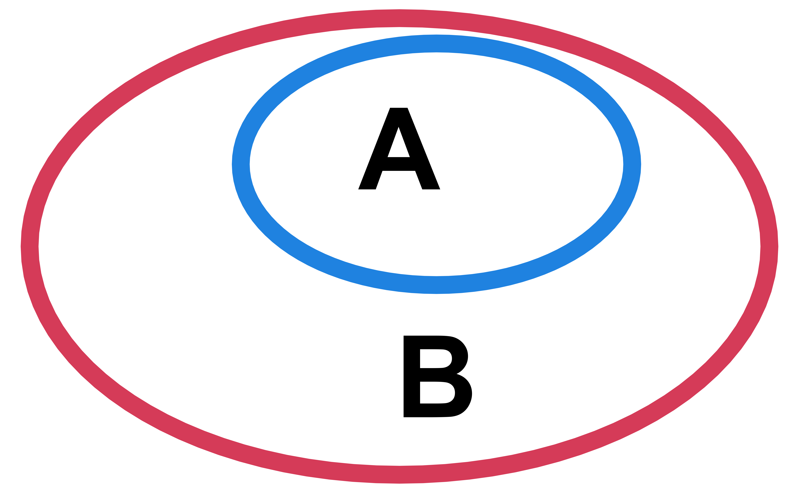
. . .
\(B \subset D\) or \(D \subset B\)?
Probability Rules
Denote the probability of an event \(A\) on a sample space \(\mathcal{S}\) as \(P(A)\).
Treat the probability of an event as the area of the event in the Venn diagram.
Rules
- \(P(\mathcal{S}) = 1\)
- For any event \(A\), \(P(A) \ge 0\)
- If \(A\) and \(B\) are disjoint, \(P(A \cup B) = P(A) + P(B)\)
Properties
- \(P(\emptyset) = 0\)
- \(0 \le P(A) \le 1\)
- \(P(A^c) = 1 - P(A)\)
- Addition Rule: \(P(A \cup B) = P(A) + P(B) - P(A \cap B)\)
- If \(A \subset B\), then \(P(A) \le P(B)\)
- Now we are ready to formally define a probability and it’s rules.
- Treat probability as the area in the Venn diagram. For example, \(P(\mathcal{S})\) is the area of the sample space, or the area of the rectangle, which is normalized to be 1.
Venn Diagram Illustration
- Disjoint case: \(P(A \cup B) = P(A) + P(B)\) because \(P(A \cap B) = 0\)!
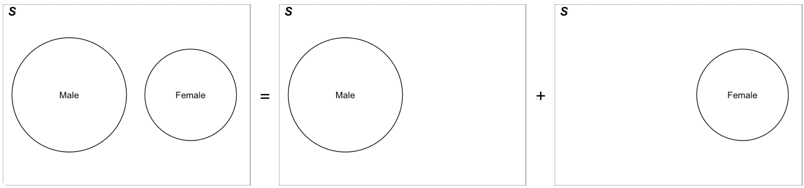
. . .
- Addition Rule: \(P(A \cup B) = P(A) + P(B) - P(A \cap B)\)
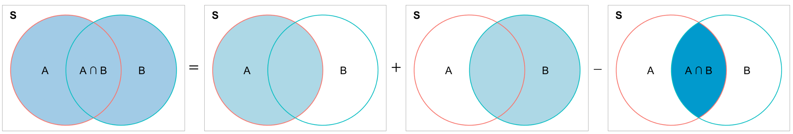
Example: M&M Colors
The makers of the candy M&Ms report that their plain M&Ms are composed of
- 15% Yellow; 10% Red; 20% Orange; 25% Blue; 15% Green; 15% Brown
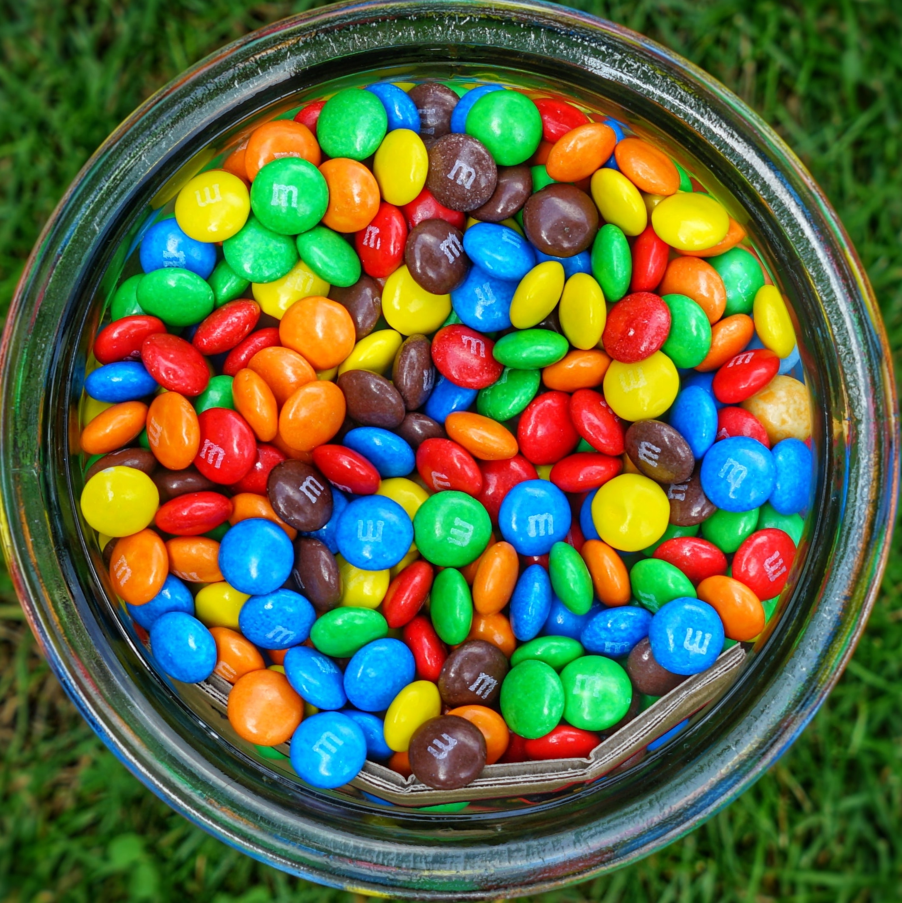
If you randomly select an M&M, what is the probability of the following?
- It is brown.
- It is red or green.
- It is not blue.
- It is red and brown.
- Give you 2 minutes!
Example: M&M Colors
- 15% Yellow; 10% Red; 20% Orange; 25% Blue; 15% Green; 15% Brown
If you randomly select an M&M, what is the probability of the following?
- It is brown.
- It is red or green.
- It is not blue.
- It is red and brown.
\(P(\mathrm{Brown}) = 0.15\)
\(\small \begin{align} P(\mathrm{Red} \cup \mathrm{Green}) &= P(\mathrm{Red}) + P(\mathrm{Green}) - P(\mathrm{Red} \cap \mathrm{Green}) \\ &= 0.10 + 0.15 - 0 = 0.25 \end{align}\)
\(P(\text{Not Blue}) = 1 - P(\text{Blue}) = 1 - 0.25 = 0.75\)
\(P(\text{Red and Brown}) = P(\emptyset) = 0\)
. . .
By the way, which interpretation of probability is used in this question?
Conditional Probability and Independence
Conditional Probability
- The conditional probability of \(A\) given \(B\) is
\[ P(A \mid B) = \frac{P(A \cap B)}{P(B)} \] if \(P(B) > 0\), and it is undefined if \(P(B) = 0\).
- “Given \(B\)” means that event \(B\) has already occurred.
. . .
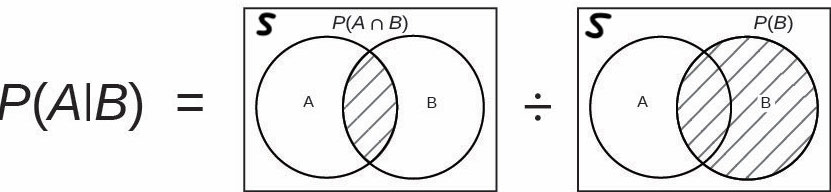
- Read \(A | B\) as “\(A\) given \(B\)”
- When we compute the probability of A, the information about B have been given, and the probability of A is adjusted, according to this information.
- The probability of A may depend on whether B happens or not.
- \(P(A | B)\) computes the probability of A given that B has been occurred. At this moment \(P(B)\) is 1.
- \(P(B)\) is scaled up by \(1 / P(B)\) so that \(P(B) \times \frac{1}{P(B)} = 1\).
- \(P(A) \ne P(A|B)\) in general.
- The conditional probability is the ratio of \(P(A \cap B)\) to \(P(B)\).
- The proportion of area of (A and B) to the area of B.
- The probability is the area of \(A \cap B\) / area of B
. . .
Multiplication Rule: \(P(A \cap B) = P(A \mid B)P(B) = P(B \mid A)P(A)\)
\(P(A)\) and \(P(B)\) are unconditional or marginal probabilities.
Difference Between \(P(A)\) and \(P(A \mid B)\)
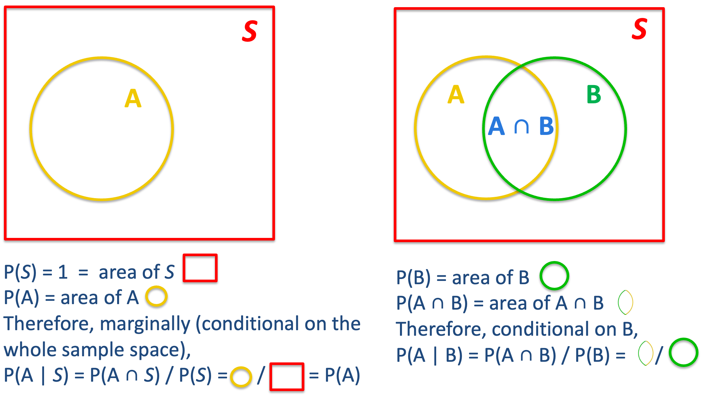
- If we don’t have any specific information, what we can base on is the entire sample space, and the probability of A is the ratio of area of A to the area of entire sample space which is 1.
- Now if we know B has occurred, we don’t need to consider the entire sample space any more.
- Instead, we focus only on B cuz we know B has occurred, \(B^c\) becomes totally irrelevant.
- To find \(P(A \mid B)\), we just need to find how large part of B that also belongs to A.
- Example, when we don’t have any info about women, to compute a woman > 20 yrs old, we base on the entire female population of interest. But if we do know that the woman has a BA degree, we shrink our focus on women who have a BA degree, and compute the proportion of the women pool that has age over 20.
Example: Peanut Butter and Jelly
Suppose 80% of people like peanut butter, 89% like jelly, and 78% like both.
Given that a randomly sampled person likes peanut butter, what’s the probability that she also likes jelly?
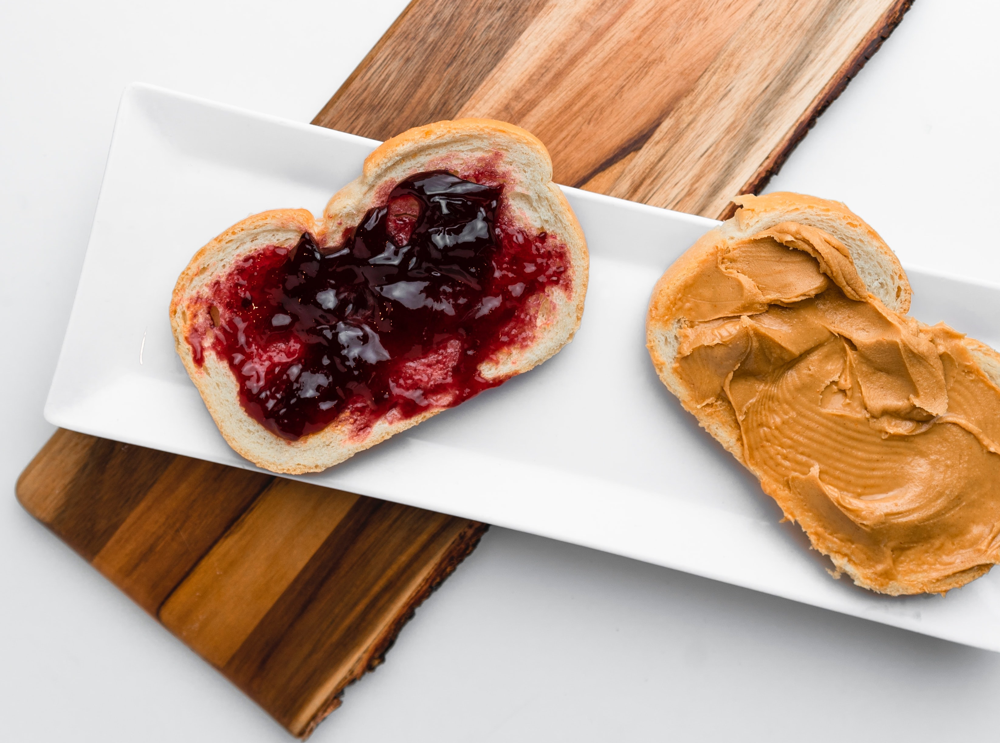
We want \(P(J\mid PB) = \frac{P(PB \cap J)}{P(PB)}\).
From the problem we have \(P(PB) = 0.8\), \(P(J) = 0.89\), \(P(PB \cap J) = 0.78\)
\(P(J\mid PB) = \frac{P(PB \cap J)}{P(PB)} = \frac{0.78}{0.8} = 0.975\).
If we don’t know if the person loves peanut butter, the probability that she loves jelly is 89%.
If we do know she loves peanut butter, the probability that she loves jelly is going up to 97.5%.
Independence
\(A\) and \(B\) are independent if \(\begin{align} P(A \mid B) &= P(A) \text{ or }\\ P(B \mid A) &= P(B) \text{ or } \\P(A\cap B) &= P(A)P(B)\end{align}\) \(\text{ if } P(A) > 0 \text{ and } P(B) > 0\)
Intuition: Knowing \(B\) occurs does not change the probability that \(A\) occurs, and vice versa.
- The information about B is irrelevant to probability of A.
- Example:
. . .
Can we compute \(P(A \cap B)\) if we only know \(P(A)\) and \(P(B)\)?
. . .
No, we cannot compute \(P(A \cap B)\) since we do not know if \(A\) and \(B\) are independent.
We could only if \(A\) and \(B\) were independent.
In general, we need the multiplication rule \(P(A \cap B) = P(A \mid B)P(B)\).
Venn Diagram Explanation of Independence
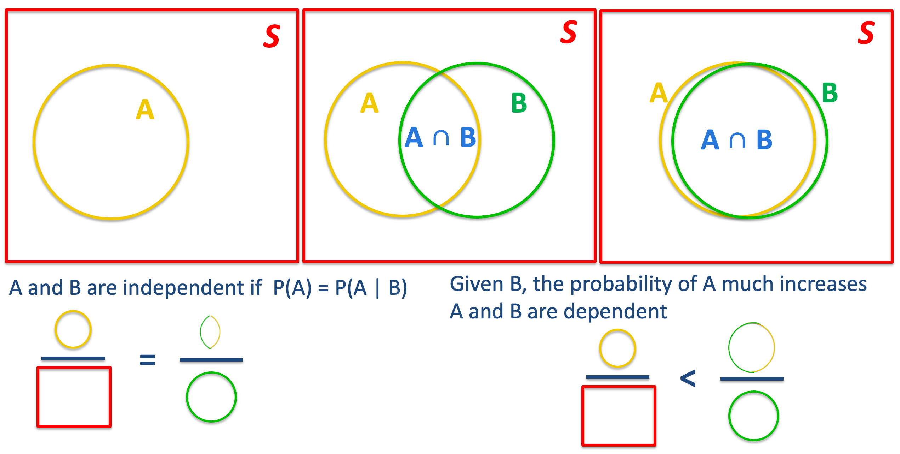
- Independence means that the ratio of area of A to area of S is the same as the ratio of area of A&B to area of B.
- Look at the case of non-independence.
- Look at the circles. The area of A&B is very close to the area of B.
- It means that the ratio of area of \(A\cap B\) to area of B is pretty close to 1.
- So given B, [ ]
- In this case, the information about B does matter, and affect probability of A.
- If we know B occurred, there is pretty high chance that A will occur as well. OK.
Independence Example
- Assuming that events \(A\) and \(B\) are independent. \(P(A) = 0.3\) and \(P(B) = 0.7\).
- \(P(A \cap B)\)?
- \(P(A \cup B)\)?
- \(P(A \mid B)\)?
. . .
- \(P(A \cap B) = P(A)P(B)=0.21\)
. . .
- \(P(A \cup B) = P(A)+P(B)-P(A\cap B) = 0.3+0.7-0.21=0.79\)
. . .
- \(P(A \mid B) = P(A) = 0.3\)
Bayes’ Formula
Why Bayes’ Formula?
Often, we know \(P(B \mid A)\) but are much more interested in \(P(A \mid B)\).
Example: diagnostic tests provide \(P(\text{positive test result} \mid \text{COVID})\), but we are interested in \(P(\text{COVID} \mid \text{positive test result})\)
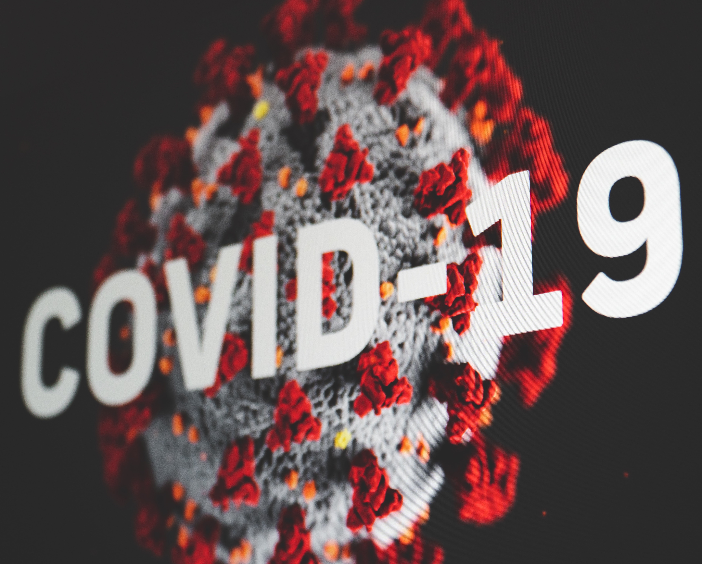
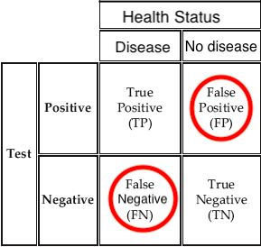
. . .
- Bayes’ formula provides a way for finding \(P(A \mid B)\) from \(P(B \mid A)\)
- Often, we know the conditional probability \(P(B \mid A)\) but are much more interested in \(P(A \mid B)\)
- For example, diagnostic tests provide \(P(\text{positive test result} \mid \text{disease})\), but we are interested in \(P(\text{disease} \mid \text{positive test result})\)
Bayes’ Formula
- If \(A\) and \(B\) are any events whose probabilities are not 0 or 1, then
\[\begin{align*} P(A \mid B) &= \frac{P(A \cap B)}{P(B)} \quad ( \text{def. of cond. prob.}) \\ &= \frac{P(A \cap B)}{P((B \cap A) \cup (B \cap A^c))} \quad ( \text{partition } B) \\ &= \frac{P(B \mid A)P(A)}{P(B \mid A)P(A) + P(B \mid A^c)P(A^c)} \quad ( \text{multiplication rule}) \end{align*}\]
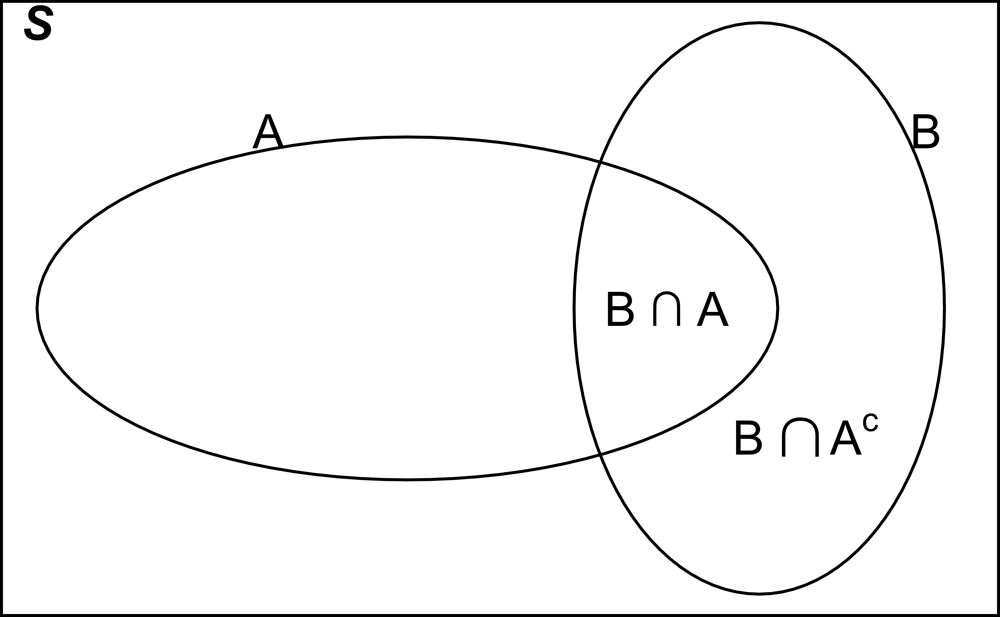
- Hint: Partition the event \(B\) as a union of disjoint sets: \(B = (B \cap A) \cup (B \cap A^c)\) (Check Venn diagram) and apply the multiplication rule.
- Start from the definition of conditional probability, we have \[ P(A \mid B) = \frac{P(A \cap B)}{P(B)} = \cdots = \frac{P(B \mid A)P(A)}{P(B \mid A)P(A) + P(B \mid A^c)P(A^c)}\]
Example: Passing Rate
After taking MATH 4720, \(80\%\) of students understand the Bayes’ formula.
- Of those who understand the Bayes’ formula,
- \(95\%\) passed
- Of those who do not understand the Bayes’ formula,
- \(60\%\) passed
Calculate the probability that a student understand the Bayes’ formula given the fact that she passed.
Bayes Formula: Step-by-Step
\(80\%\) of students understand the Bayes’ formula.
Of those who understand the Bayes’ formula, \(95\%\) passed ( \(5\%\) failed).
Of those who do not understand the formula, \(60\%\) passed ( \(40\%\) failed).
\[P(A \mid B) = \frac{P(B \mid A)P(A)}{P(B \mid A)P(A) + P(B \mid A^c)P(A^c)}\]
. . .
- Step 1: Formulate what we would like to compute
. . .
\(P(\text{understand} \mid \text{passed})\)
. . .
- Step 2: Define relevant events in the formula: \(A\), \(A^c\) and \(B\)
. . .
Let \(A =\) understand. \(B =\) passed. Then \(A^c =\) don’t understand and \(P(\text{understand} \mid \text{passed}) = P(A \mid B)\).
Bayes Formula: Step-by-Step
\(80\%\) of students understand the Bayes’ formula.
Of those who understand the Bayes’ formula, \(95\%\) passed ( \(5\%\) failed).
Of those who do not understand the formula, \(60\%\) passed ( \(40\%\) failed).
\[P(A \mid B) = \frac{P(B \mid A)P(A)}{P(B \mid A)P(A) + P(B \mid A^c)P(A^c)}\]
- Step 3: Find probabilities in the Bayes’ formula using provided information.
\(P(B \mid A) = P(\text{passed} \mid \text{understand}) = 0.95\), \(P(B \mid A^c) = P(\text{passed} \mid \text{don't understand}) = 0.6\)
\(P(A) = P(\text{understand}) = 0.8\), \(P(A^c) = 1 - P(A) = 0.2\).
. . .
- Step 4: Apply Bayes’ formula.
\(P(\text{understand} \mid \text{passed}) = P(A \mid B) = \frac{P(B \mid A)P(A)}{P(B \mid A)P(A) + P(B \mid A^c)P(A^c)} = \frac{(0.95)(0.8)}{(0.95)(0.8) + (0.6)(0.2)} = 0.86\)
Bayes Formula: Tree Diagram Illustration
\(80\%\) of students understand the Bayes’ formula.
Of those who understand the Bayes’ formula, \(95\%\) passed ( \(5\%\) failed).
Of those who do not understand the formula, \(60\%\) passed ( \(40\%\) failed).
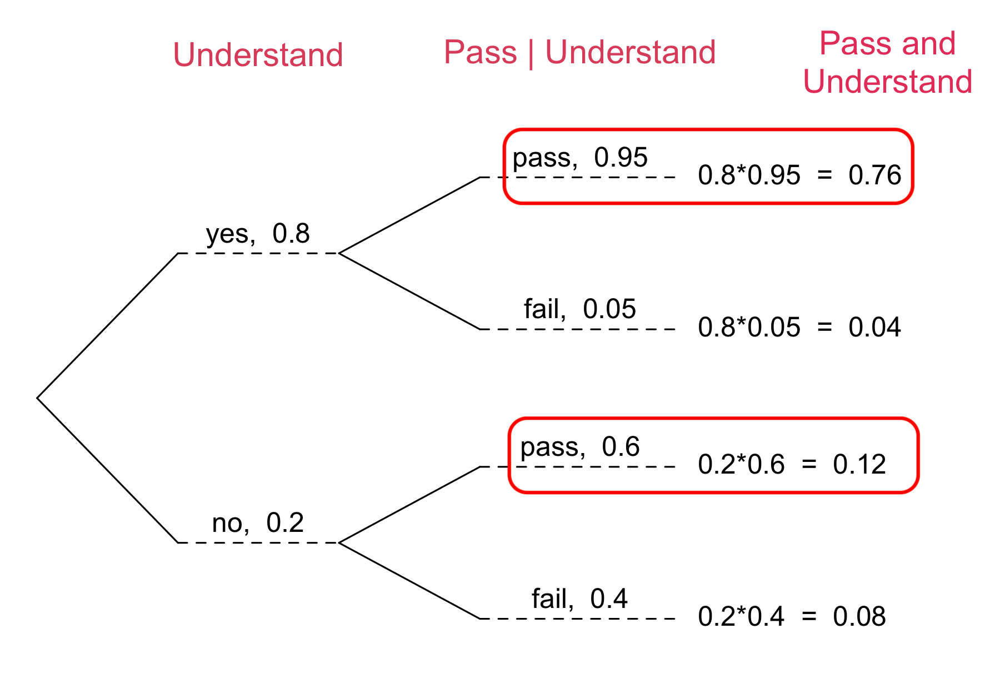
\[\begin{align*} & P(\text{yes} \mid \text{pass}) \\ &= \frac{P(\text{yes and } \text{pass})}{P(\text{pass})} \\ &= \frac{P(\text{yes and } \text{pass})}{P(\text{pass and yes}) + P(\text{pass and no})}\\ &= \frac{0.76}{0.76 + 0.12} = 0.86 \end{align*}\]
\[\begin{align*} & P(\text{yes} \mid \text{pass}) \\ &= \frac{P(\text{yes and } \text{pass})}{P(\text{pass})} \\ &= \frac{P(\text{yes and } \text{pass})}{P(\text{pass and yes}) + P(\text{pass and no})}\\ &= \frac{P(\text{pass | yes})P(\text{yes})}{P(\text{pass | yes})P(\text{yes}) + P(\text{pass | no})P(\text{no})} \\ &= \frac{0.76}{0.76 + 0.12} = 0.86 \end{align*}\]